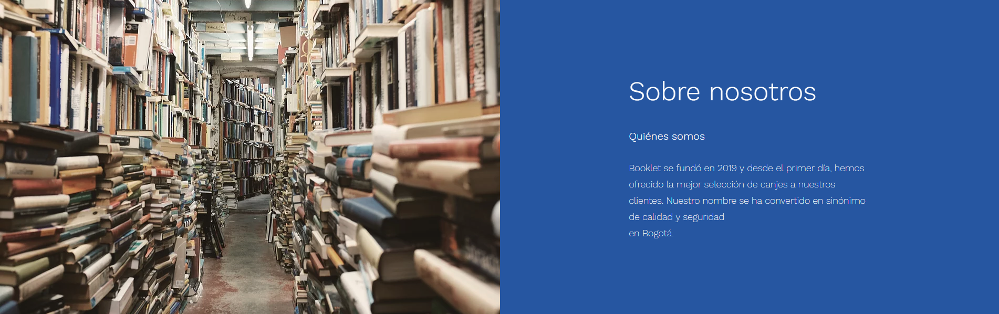

<body>
<div class="container-fluid" >
        <mat-toolbar>  
            <a routerLink="/home" style="cursor: pointer;" (click)="diselected()">Booklet</a>
             <span class="example-fill-remaining-space"></span>           
             
            <button mat-button routerLink="/auth/login" style="cursor: pointer; background-color: 'primary'; color: #3366ff ;font: bold 18px TimesNewRoman;"(click)="diselected()"*ngIf="isLoggedOut$ | async">Login</button>              
          
            <button mat-button routerLink="/auth/sign-up" style="cursor: pointer; background-color: 'primary'; color: #3366ff ;font: bold 18px TimesNewRoman;"(click)="diselected()"*ngIf="isLoggedOut$ | async">Sign-Up</button>

             <button mat-button routerLink="/home" style="cursor: pointer; background-color: 'primary'; color: #3366ff ;font: bold 18px TimesNewRoman;"(click)="logout()" *ngIf="isLoggedIn$ | async">Logout</button>

             <button mat-button routerLink="/usuarios/{{us.getUsuarioUsuarioActual().id}}" style="cursor: pointer; background-color: 'primary'; color: #3366ff ;font: bold 18px TimesNewRoman;" *ngIf="isLoggedIn$ | async">Mi perfil</button></mat-toolbar>
            
        
            <mat-toolbar color="primary" >
                <span class="example-fill-remaining-space"></span>
                <button mat-button [matMenuTriggerFor]="menu">Demo listar</button>
                <mat-menu #menu="matMenu">
                  <button mat-menu-item [routerLink]="[ '/carro/list']" (click)="selected()">Listar carros de compra</button>
                  <button mat-menu-item [routerLink]="[ '/usuarios/list']" (click)="selected()">Listar Usuarios</button>
                  <button mat-menu-item [routerLink]="[ '/libros/list']" (click)="selected()">Listar Libros</button>
                  <button mat-menu-item [routerLink]="[ '/respuesta/list']" (click)="selected()">Listar Respuestas</button>
                  <button mat-menu-item [routerLink]="[ '/canje/list']" (click)="selected()">Listar Respuestas</button>
                  
                </mat-menu>
                <button mat-button [matMenuTriggerFor]="menu2">Demo crear</button>
                <mat-menu #menu2="matMenu">
                  <button mat-menu-item [routerLink]="[ '/carro/create']" (click)="selected()">Crear carro de compra</button>
                  <button mat-menu-item [routerLink]="[ '/usuarios/add']" (click)="selected()">Crear usuario</button>
                  <button mat-menu-item [routerLink]="[ '/libros/add']" (click)="selected()">Crear libro</button>
                  <button mat-menu-item [routerLink]="[ '/respuesta/create']" (click)="selected()">Crear respuesta</button>
                  <button mat-menu-item [routerLink]="[ '/canje/add']" (click)="selected()">Crear canje</button>
                  
                </mat-menu>
                <button mat-button [matMenuTriggerFor]="menu3">Demo Actualizar</button>
                <mat-menu #menu3="matMenu">
                  <button mat-menu-item [routerLink]="[ '/carro/update']" (click)="selected()">Actualizar carro de compra</button>
                  <button mat-menu-item [routerLink]="[ '/usuarios/10/edit']" (click)="selected()">Actualizar usuario</button>
                  <button mat-menu-item [routerLink]="[ '/respuesta/update']" (click)="selected()">Actualizar respuesta</button>
                  
                </mat-menu>
        </mat-toolbar>
    
        <router-outlet></router-outlet> 
        <button mat-flat-button color="primary" routerLink="home" *ngIf="getSelect()" (click)="diselected()" >regresar</button>
    </div>
<div >
     
    <p><br/> </p>
   
</div>
    </body>